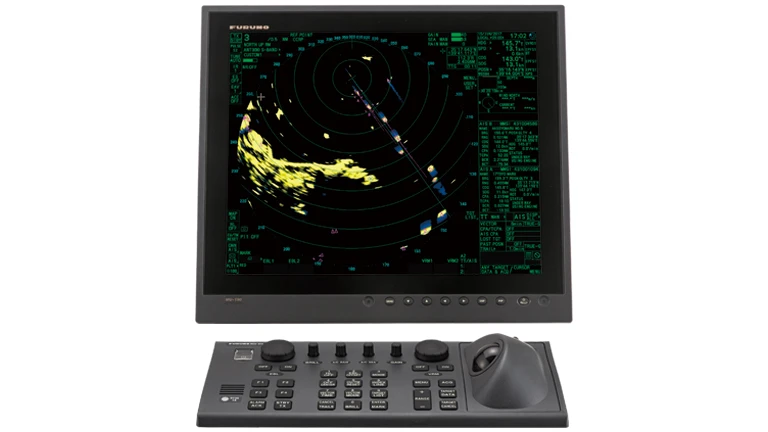
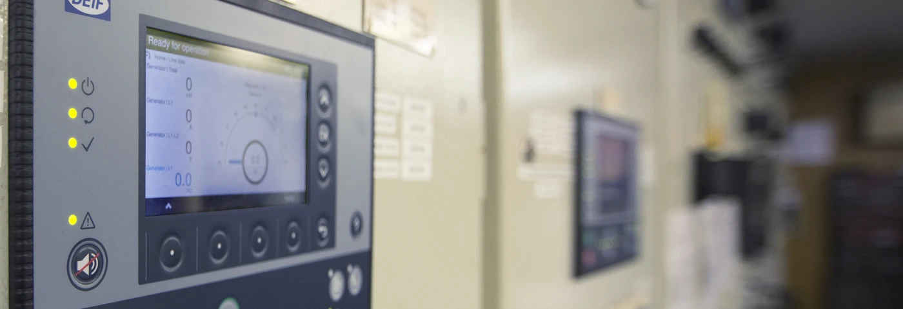
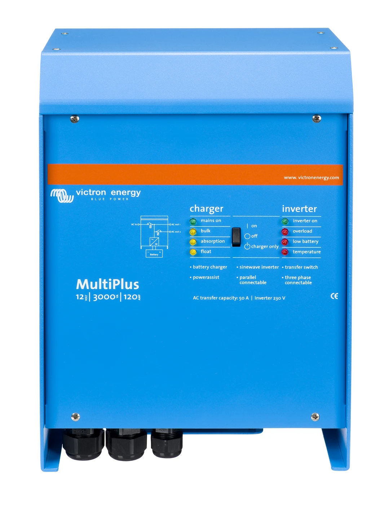
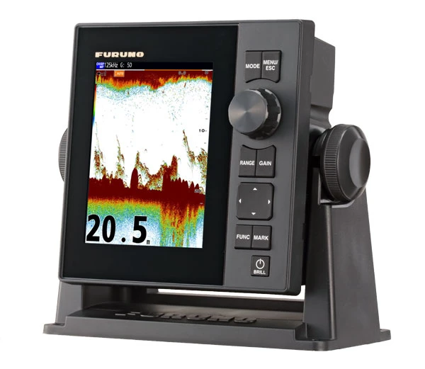

Novarium Marine – Guida alle 5 categorie di ricambi
L'obiettivo di Novarium Marine è vendere ricambi per la riparazione e la manutenzione delle imbarcazioni, soprattutto yacht, navi commerciali e pescherecci.
Non vendiamo barche né grandi macchinari. Ci concentriamo su componenti elettronici, elettrici e di automazione, preferibilmente facili da spedire, nuovi, usati o ricondizionati.
1. Navigation & Communication
Strumenti di navigazione e comunicazione

Sono gli strumenti che permettono a una nave di sapere dove si trova, dove sta andando, cosa ha intorno e comunicare con altre navi o con la terraferma.
Esempi di prodotti:
- Radar: individua altre navi, coste e ostacoli anche di notte o con la nebbia.
- GPS e chartplotter: mostrano la posizione della nave su una carta nautica elettronica.
- AIS: trasmette e riceve informazioni sulla posizione e sull'identità delle navi.
- Radio VHF: permette le comunicazioni tra navi e con i porti.
- Autopilota: mantiene automaticamente la rotta impostata.
- Girobussole e sensori di direzione: indicano l'orientamento della nave.
Marchi tipici: Furuno, Raymarine, JRC, Simrad, Kongsberg, Sperry Marine.
Cosa possiamo vendere: display, schede elettroniche, moduli radar, antenne, alimentatori, tastiere e unità di controllo.
2. Automation & Control
Automazione e controllo dei sistemi di bordo

Una nave contiene molti macchinari che devono funzionare insieme. Questa categoria comprende i dispositivi che controllano automaticamente motori, pompe, valvole e altri impianti.
Esempi di prodotti:
- PLC: piccoli computer industriali che comandano i macchinari.
- Moduli I/O: ricevono segnali dai sensori e inviano comandi.
- Pannelli HMI: schermi attraverso i quali l'operatore controlla gli impianti.
- Controller: regolano il funzionamento di motori o altri sistemi.
- Sensori: misurano pressione, temperatura, livello dei liquidi o velocità.
- Moduli di allarme: segnalano guasti e condizioni anomale.
Marchi tipici: Siemens, ABB, Allen-Bradley, Honeywell, Kongsberg, Wärtsilä.
Cosa possiamo vendere: schede, PLC, moduli elettronici, pannelli di controllo, sensori e ricambi dei sistemi automatici.
Questa categoria è interessante perché molti componenti sono industriali, non esclusivamente navali: il mercato dei ricambi può essere ampio.
3. Electrical & Power Systems
Impianti elettrici e sistemi di alimentazione

Comprende i dispositivi che distribuiscono, trasformano, regolano e proteggono l'energia elettrica a bordo.
Esempi di prodotti:
- Alimentatori: forniscono la tensione necessaria agli strumenti elettronici.
- Inverter: trasformano corrente continua in corrente alternata.
- Convertitori: modificano un livello di tensione in un altro.
- Caricabatterie: mantengono cariche le batterie di bordo.
- Interruttori automatici: proteggono gli impianti dai sovraccarichi.
- Relè e contattori: attivano o disattivano circuiti elettrici.
- Schede di controllo: gestiscono il funzionamento dei sistemi di alimentazione.
Marchi tipici: ABB, Siemens, Schneider Electric, Victron Energy, Mastervolt.
Cosa possiamo vendere: alimentatori, moduli, relè, schede elettroniche, convertitori e dispositivi di protezione.
Non ci interessano grandi generatori o motori completi, ma soprattutto i loro componenti sostituibili.
4. Fishing Electronics
Elettronica per la pesca professionale

Sono gli strumenti elettronici che aiutano i pescherecci a individuare i pesci, conoscere la profondità del mare e controllare alcune operazioni di pesca.
Esempi di prodotti:
- Ecoscandagli: misurano la profondità e mostrano ciò che si trova sotto la nave.
- Fish finder: individuano banchi di pesci.
- Sonar: utilizzano onde acustiche per esplorare l'acqua anche lateralmente o davanti alla nave.
- Trasduttori: trasformano segnali elettrici in onde acustiche e viceversa.
- Display e centraline: visualizzano e gestiscono le informazioni degli strumenti.
- Sensori per reti da pesca: possono misurare profondità, apertura o posizione delle reti.
Marchi tipici: Furuno, Simrad, Koden, JRC, Airmar.
Cosa possiamo vendere: trasduttori, moduli sonar, schede, display, sensori e unità elettroniche.
Il cliente tipico può essere un'impresa che ripara gli strumenti elettronici dei pescherecci.
5. Discontinued & Hard-to-Find Spare Parts
Ricambi fuori produzione e difficili da trovare
Questa è una categoria particolarmente interessante per il nostro modello commerciale.
Su molte navi sono installati sistemi elettronici che hanno 15, 20 o anche 30 anni. I costruttori possono aver smesso di produrre determinati ricambi.
Ma la nave continua a funzionare e il proprietario non vuole necessariamente sostituire l'intero impianto.
Esempi:
- Una scheda radar Furuno non più prodotta.
- Un display di navigazione Kongsberg ormai obsoleto.
- Un modulo Siemens appartenente a una vecchia serie.
- Un alimentatore di un sistema di controllo fuori produzione.
- Una scheda elettronica recuperata da un'apparecchiatura dismessa.
Cosa possiamo vendere: componenti nuovi da vecchie giacenze (new old stock), usati verificati e ricondizionati.
Qui conta molto la capacità di identificare un ricambio attraverso marca, modello e part number, oltre che verificarne la compatibilità.
Riepilogo per chi lavora in Novarium
| Categoria | In parole semplici |
|---|---|
| Navigation & Communication | Strumenti per guidare la nave e comunicare |
| Automation & Control | Componenti che controllano macchinari e impianti |
| Electrical & Power Systems | Componenti che gestiscono l'elettricità |
| Fishing Electronics | Strumenti elettronici per individuare i pesci |
| Discontinued & Hard-to-Find | Ricambi vecchi, rari o fuori produzione |
Una distinzione importante per il nostro business
Le prime quattro categorie identificano la funzione del ricambio. La quinta identifica invece la sua disponibilità sul mercato.
Per esempio, una scheda radar Furuno fuori produzione appartiene tecnicamente a Navigation & Communication, ma è anche un ricambio Discontinued & Hard-to-Find.
Il nostro vantaggio commerciale potenziale non è competere con chi vende un radar nuovo completo, ma trovare la scheda o il modulo necessario a riparare un radar che il cliente vuole continuare a utilizzare.
È un modello simile a quello dei ricambi medicali di Novarium. La differenza è che dobbiamo ancora costruire e verificare la nostra conoscenza tecnica del settore navale.
Integrazioni pratiche — riconoscere e qualificare una richiesta
Quattro esempi per orientarsi
- Schermo radar nero: identificare se il cliente cerca il display, la sua scheda o il sistema completo. Il sintomo da solo non identifica il pezzo guasto.
- Livello del serbatoio non visualizzato: distinguere sensore, cablaggio, modulo I/O e pannello HMI. Chiedere quale componente è stato identificato dal tecnico.
- Unità di alimentazione blu: il MultiPlus fotografato combina inverter e caricabatterie. Colore e marca non bastano: esistono varianti con specifiche e collegamenti diversi.
- Ecoscandaglio senza echi: distinguere display e trasduttore. Verificare modello del sistema, frequenza, potenza e connettori sulla documentazione, non soltanto la forma del pezzo.
Checklist da chiedere al cliente
- Marca e modello del sistema e del componente richiesto.
- Part number completo, inclusi suffissi, revisione hardware ed eventuale versione software rilevante.
- Foto leggibili della targhetta, del pezzo intero e dei connettori; eventuale riferimento nel manuale o nella distinta ricambi.
- Specifiche: tensione e tipo di alimentazione, potenza/corrente e, per trasduttori, frequenza e connessioni.
- Impiego a bordo documentato: impianto e apparecchiatura su cui è installato, manuale o evidenza tecnica del collegamento al settore marino.
- Quantità, urgenza e condizioni accettabili: nuovo, usato verificato o ricondizionato. Chiedere se serve il ricambio esatto o se un tecnico può valutare alternative documentate.
Tre confusioni da evitare
- Display ≠ sistema completo. Specificare cosa è incluso: unità di comando, cavi, antenne e accessori non sono automaticamente compresi.
- Connettore simile ≠ trasduttore compatibile. Furuno elenca trasduttori CW e CHIRP specifici per FCV-600; alcune funzioni richiedono un trasduttore compatibile. La verifica va fatta sul modello esatto.
- PLC industriale ≠ idoneità marina automatica. Non dedurla dal marchio: richiedere documentazione del prodotto e verifica dei requisiti dell’impianto da parte del tecnico, incluse eventuali approvazioni richieste.